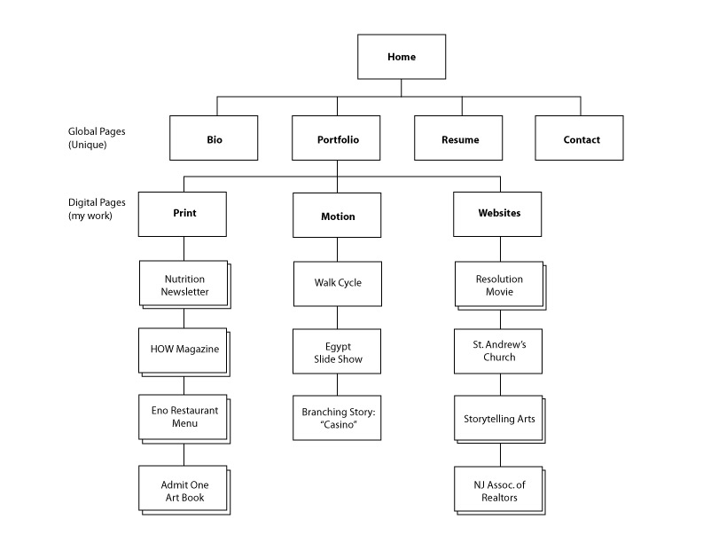

Grid Systems
Assignment 2: Portfolio Structure
Begin organizing the content of your portfolio by thinking about what work you want to show, the categories you will use, and the information you will need, like an About page, Resume, Contact and other pages.
Begin writing descriptions of you work, including the technology you used and work that was done, and any notes about the creative process or organization that are relevant. Take screenshots of you work and upload them along with the information.
How to make screen shots: On Windows, or On Mac OS X
You will also need a site map. You can make this in a graphics program like Illustrator or Google Draw, or draw something by hand and scan it. Your sitemap should look something like this, with your own content:
